ParaView LightViz User Guide
When you start ParaView LightViz and point your web browser at the web server it started, you first see the dataset list page. This allows you to select which dataset you are interested in viewing. To open the dataset click on its thumbnail on this page.
DataView1
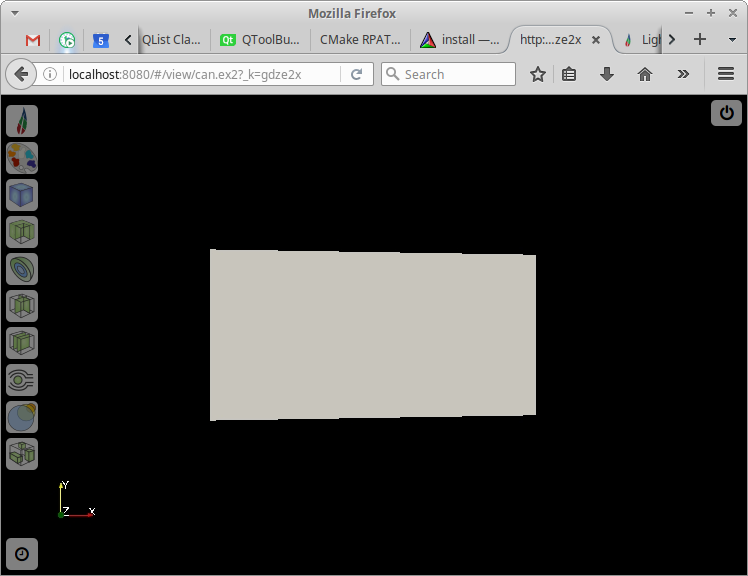
By default in LightViz the dataset will be opened in this view. On the left are icons for settings, editing the colormap and various ways to display the data. If the dataset has temporal information there will be an icon in the lower left for the time controls. Each of these icons will expand to open a menu of controls related to that feature. Clicking on the icon for an open menu will hide the menu again. On the top right is an icon similar to a power button. Pressing this will return to the dataset list page.
DataView2

If the profile specified on the command line told LightViz to use the alternate UI, this view is what you will see. The controls are collapsed down into a small box on the upper right which can be expanded by clicking on the LightViz logo. The other top-level controls are a power button icon that acts as a link to the dataset list page and a button showing arrows in the diagonal directions that can be used to reset the camera to a reasonable zoom level and re-center it on the data.
Controls
General Controls
These controls are for things like resetting the camera and changing the foreground and background colors of the scene.
In the default UI they are found by clicking on the LightViz logo in the upper left.

In the secondary UI they are found at the top of the controls section opened by clicking on the LightViz icon.

Create thumbnail: The camera icon is the create thumbnail button. It creates a thumbnail of the image on the server side and adds it to the list of thumbnails for that dataset.
Change foreground/background colors: The images of a colored circle fading to a different colored background set the foreground and background color to those colors displayed.
Auto-apply changes: Since applying the changes to larger datasets can take too long to be interactive, changes you makes can be delayed until you hit the ‘Apply’ button. Whether or not to do this is saved in the dataset metadata, but this control allows you to override that default.
Reset camera: The icon of four diagonal arrows is the reset camera button. This resets the zoom level of the camera as well as centering the dataset in the view.
Time Controls
The time controls only appear if the dataset has temporal information accociated with it. In the default UI they can be accessed via the button with the clock icon in the lower left corner.

In the secondary UI they are found at the top below the general controls when the controls panel is expanded.
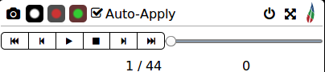
They allow the user to specify which point in time is visible and basic play/step/stop animation control. There is a slider to quickly move around in time and six buttons for more fine-tuned control. From left to right the buttons are ‘Go to Beginning’, ‘Go Back One Frame’, ‘Play’, ‘Stop’, ‘Go Forward One Frame’ and ‘Go to End’. There are also two displays of time information: one that shows the current timestep out of the total number of timesteps and one that shows the current time information (in seconds or whatever time units are in the datafile).
ColorMap Controls
The colormap controls allow you to set the colormap and opacity transfer function for each data array in the data. In the default UI, they are accessed by clicking on the icon that looks like a paint palette.
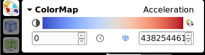
In the secondary UI they are in a collapsible section with the header ‘ColorMap’ which can be expanded to show them. This section is shown by default. In the top right of the colormap controls the name of the data array whose colormap is currently being edited is shown. Click on this to open a dropdown menu and select the data array of interest.
The center of the next line of the colormap controls shows the currently active colormap. Below this the range that it is applied over is shown. You can edit these numbers to change the range the colormap applies to. There are also two buttons in between the range text boxes. The one that resembles a clock examines the data and sets the range to the maximum and minimum of that data array at any point in time. The one that resembles a blue cube examines the data and sets the range to the current maximum and minimum of the data array.
To the right of the current colormap display is a palette icon. Click this to open a list of available colormaps and select which one to use for this data array.

To the left of the current colormap display is an icon of a circle that is half white and half black. This button opens the opacity transfer function editor. The opacity transfer function shows a graph of how opaque the color will be over the data range. The points on this graph can be moved by clicking and dragging them and new points can be added by double-clicking anywhere in the graph. The active point (or last selected) is highlighted in red and its coordinates is displayed below the graph. You can edit these for more fine-tuned control over the point. To the right of these text fields are two buttons: a button with a plus icon to add a new point and make it the selected point and a button with a trash can icon to delete the currently selected point.

Dataset Controls
The dataset controls are accessed via the button (default UI) or expandable section (other UI) with the blue cube icon. The controls here apply to the view of the entire dataset without any filters applied.

You can show or hide the view of the entire dataset by clicking the blue cube icon in the top left of these controls. Below that there are three icons that control the type of display for the dataset. The one that resembles a pound sign with one too many rows makes the dataset displayed as a wireframe. The one that has a parallelogram with a blank interior makes the dataset displayed as a surface. And the one that resembles a chessboard makes the display a surface with the edges also shown in a different color. To the right of this is the array selector to choose the data array to color by. If you choose a data array to color by here then the colormap for that data array (specified in the ColorMap controls) will be applied to the dataset. Below this is the opacity control. You can either move the slider or enter text in the text box to set the opacity of the entire dataset display.

If you have a dataset in a multiblock format, then below this is the block selector, which controls which blocks of the multi-block data are being displayed. This affects all the other display types and not just the whole dataset display.
Clip Module Controls

The clip module essentially cuts off part of the data so you can focus on a region of intereset or remove a side in order to see internal structures. It is accessed by the green cube icon with the foreground corner removed. Once you have opened the clip module controls there will be the clip icon again in the top left. Clicking on this will display the clip module (it will brighten the icon when the module is displayed). If the dataset is not set to auto-apply changes, at the end of this line of controls will be the ‘Apply’ and ‘Reset’ buttons. The apply button will update the version of the clip module being displayed to reflect your current changes. The reset button will undo any changes you have made since you last pressed the apply button.
Below these are controls to select the display type and what data array to color the clip by. These are exactly the same as the ones in the Dataset Controls except that they affect the clipped data.

Below those are the controls that determine which part of the data is clipped off. The clip works by cuttin the data three times, once along each axis. The sliders here let you control where on that axis the cut occurs and the switches to the left of the sliders control which side of the cut is kept in the clipped data. You can also specify coordinates for the cuts in the text boxes to the right of the sliders.
Since the clip is difficult to predict from just the sliders, when auto-applying changes is disabled an outline of the clipped data is shown and kept up to date with the current state of the sliders.
Contour Module Controls
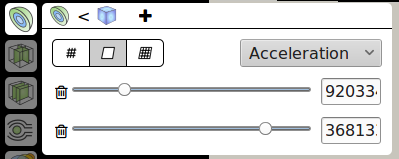
The contour module extracts isocontours from the dataset (lines or surfaces where the value of the active data array is constant). The controls for this are accessed via the section or button with the icon of half a sphere with alternating blue and green layers. Similar to clip the contour icon in the top left of the controls panel controls whether or not the module is displayed. The icon will be faded out if it is disabled. Next to this there is another icon (the dataset icon by default) which controls what the input this module uses. The input can be either the whole dataset or the output from the clip module. The icon of the input currently being used is displayed next to the contour icon.
The contour module has a display type control similar to dataset below the control to show the module and select its input. To the right of this is the selector for which data array to color the module’s output by. However this is treated specially for the contour module. The contour module also uses this as the data array to contour by. Values (set below) tell the contour module to create contours at values of this data array.

Next to the input control button is a button with a plus icon. This adds a contour. When a contour is added a new line will appear a the bottom of the contour controls. This line will have a slider and text area to control the data value for the new contour and a button with a trash can icon to delete the contour.
Slice Module Controls
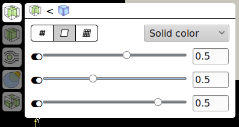
A slice is a plane through the dataset that can be colored by data arrays to reveal internal structures. LightViz actually has two slice modules. This one allows three perpendicular slices, one along each axis and has an icon that of a cube with two internal slices along different axes. This module has controls to enable it and set its input similar to the contour module. And below these it has controls to set its display type and data array to color by.
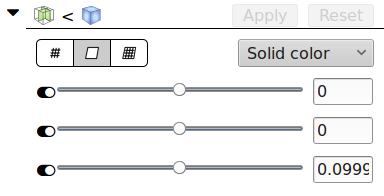
Below those are the controls for the three slices that it will show. Each row corresponds to the slice along a given axis, X, Y, and Z. The slider positions the slice along that axis and the text field can be used for more fine-tuned control of the number. The toggle switch to the left of the slider enables or disables the slice along that axis so that any combination of these slices can be shown.
Multi-Slice Module Controls
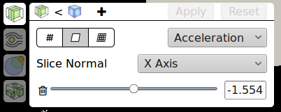
The Multi-Slice module is the other way of displaying slices in LightViz. It allows for any number of slices but the slices must all be along the same axis, parallel to each other. This module has controls to enable it and set its input similar to the contour module. And below these it has controls to set its display type and data array to color by.

To the right of the input selection button there is a button with a plus icon. Pressing this will add a slice (and a line of controls to control that new slice). Below the data array selection there is a dropdown to select which axis to slice along. Slices in this module will be perpendicular to the given axis. Below this there is a line for each slice that has a slider to control the slice position along the axis and a text field for fine-tuning the position. The line also has a button with a trash can icon that will delete the corresponding slice.
Streamline Module
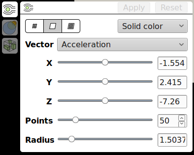
The streamline module seeds points randomly in a small sphere in the data and then integrates flow along one of the data’s vector arrays (assumed to be velocity) to produce streamlines. The streamlines are then converted into thin tubes for ease viewing them relative to the rest of the 3D scene. The icon for streamilnes is a green circle with black lines spreading around it and converging back to straight lines to its right. Similar to the other modules the streamlines module has a button with the modules icon that will show or hide the display and buttons below this to select the display type and the data array to color by.
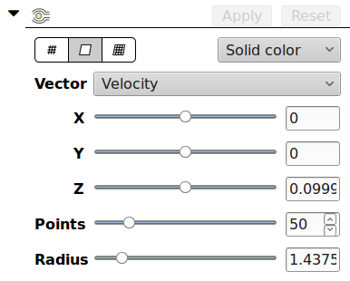
Below these common controls is a dropdown labeled ‘Vector’ that selects which data array is assumed to be the velocity vectors to integrate into the streamlines. Then there three sliders with text boxes that control the position of the center point of the seed points. The slider labeled ‘Points’ controls how many seed points there are and the slider labeled ‘Radius’ controls how tightly clustered around the center point they are.
Volume Module
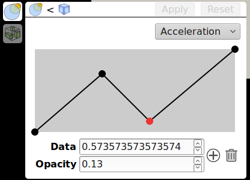
The volume module displays a volume rendering of the data. The volume module has an icon of overlapping translucent circles. There is a button in its control panel with this icon to show or hide the module. There is also the input selection similar to the other modules. Then there is a dropdown to select the data array to volume render. On the other modules this dropdown selects the data array to color by, but here it is the data to volume render.

The only other control here is the opacity transfer function for the currently selected data array. This control also appears in the color map controls but it here because the volume rendering depends greatly on the opacity transfer function. Unlike the other controls, this one does not require the user to press the Apply button; the changes are shown live as the transfer function is edited.
Threshold Module
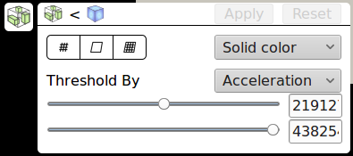
The threshold module removes data except where one of the data array’s values is in a given range. Its icon is a cube with smaller disconnected green boxes inside. There is a button with the threshold icon that controls the visibility of the threshold and a toggle to control its input similar to the other modules. Below these are the display type and data array to color by controls.
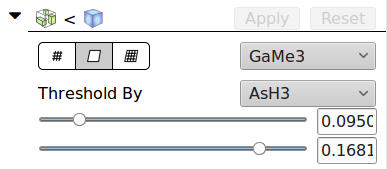
Under the common controls is a dropdown to select the data array to threshold by. Below this are two sliders to set the minimum and maximum values to threshold. Only parts of the dataset with values in between these bounds will be displayed in the output of the threshold module.